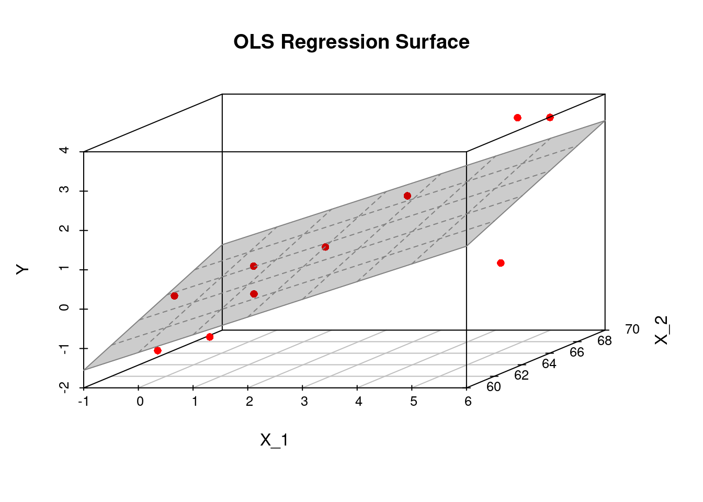

In the following we focus on case of random designs \(X\) (i.e. \(X\) being a random variable), since, first, this is the more relevant case in econometrics and, second, it includes the case of fixed designs (i.e. \(X\) being deterministic) as a special case (“degenerated random variable”). Caution: A random \(X\) requires us to consider conditional means and variances “given \(X\).” That is, if we would be able to resample from the model, we do so by fixing (conditioning on) the in-principle random explanatory variable \(X\).
3.1 Assumptions
The multiple linear regression model is defined by the following assumptions:
Assumption 1: The Linear Model Assumption (Data Generating Process)
Part (a): Model
\[
\begin{align}
Y_i=\sum_{k=1}^K\beta_k X_{ik}+\varepsilon_i, \quad i=1,\dots,n.
\end{align}
\tag{3.1}\] Usually, a constant (intercept) is included, in this case \(X_{i1}=1\) for all \(i\). In the following we will always assume that \(X_{i1}=1\) for all \(i\), unless otherwise stated.
It is convenient to write Equation 3.1 using matrix notation \[\begin{eqnarray*}
Y_i&=&\underset{(1\times K)}{X_i'}\underset{(K\times 1)}{\beta} +\varepsilon_i, \quad i=1,\dots,n,
\end{eqnarray*}\] where \(X_i=(X_{i1},\dots,X_{iK})'\) and \(\beta=(\beta_1,\dots,\beta_K)'\). Stacking all individual rows \(i\) leads to \[\begin{eqnarray*}\label{LM}
\underset{(n\times 1)}{Y}&=&\underset{(n\times K)}{X}\underset{(K\times 1)}{\beta} + \underset{(n\times 1)}{\varepsilon},
\end{eqnarray*}\] where \[\begin{equation*}
Y=\left(\begin{matrix}Y_1\\ \vdots\\Y_n\end{matrix}\right),\quad X=\left(\begin{matrix}X_{11}&\dots&X_{1K}\\\vdots&\ddots&\vdots\\ X_{n1}&\dots&X_{nK}\\\end{matrix}\right),\quad\text{and}\quad \varepsilon=\left(\begin{matrix}\varepsilon_1\\ \vdots\\ \varepsilon_n\end{matrix}\right).
\end{equation*}\]
Part (b): Random Sampling
Moreover, we assume that the observed (“obs”) data points \[
((Y_{1,obs},X_{11,obs},\dots,X_{1K,obs}),(Y_{2,obs},X_{21,obs},\dots,X_{2K,obs}),\dots,(Y_{n,obs},X_{n1,obs},\dots,X_{nK,obs}))
\] are a realizations of an independent and identically distributed (i.i.d.) random sample \[
((Y_{1},X_{11},\dots,X_{1K}),(Y_{2},X_{21},\dots,X_{2K}),\dots,(Y_{n},X_{n1},\dots,X_{nK}))
\]
That is, the \(i\)th observed \(K+1\) dimensional data point \((Y_{i,obs},X_{i1,obs},\dots,X_{iK,obs})\in\mathbb{R}^{K+1}\) is a realization of a \(K+1\) dimensional random variable \((Y_{i},X_{i1},\dots,X_{iK})\in\mathbb{R}^{K+1},\) where \((Y_{i},X_{i1},\dots,X_{iK})\) has the identical joint distribution as \((Y_{j},X_{j1},\dots,X_{jK})\) for all \(i=1,\dots,n\) and all \(j=1,\dots,n\), and where \((Y_{i},X_{i1},\dots,X_{iK})\) is independent of \((Y_{j},X_{j1},\dots,X_{jK})\) for all \(i\neq j=1,\dots,n.\)
Note: Due to Equation 3.1, this i.i.d. assumption is equivalent to assuming that the multivariate random variables \((\varepsilon_i,X_{i1},\dots,X_{iK})\in\mathbb{R}^{K+1}\) are i.i.d. across \(i=1,\dots,n\).
Remark: Usually, we do not use a different notation for observed realizations \((Y_{i,obs},X_{i1,obs},\dots,X_{iK,obs})\in\mathbb{R}^{K+1}\) and for the corresponding random variable \((Y_{i},X_{i1},\dots,X_{iK})\in\mathbb{R}^{K+1}\) since often both interpretations (random variable and its realizations) can make sense in the same statement and then it depends on the considered context whether the random variables point if view or the realization point of view applies.
Assumption 2: Exogeneity\[E(\varepsilon_i|X_i)=0,\quad i=1,\dots,n\] This assumption demands that the mean of the random error term \(\varepsilon_i\) is zero irrespective of the realizations of \(X_i\). Note that together with the random sampling assumption (in Assumption 1) this assumption implies even strict exogeneity \(E(\varepsilon_i|X) = 0\) since we have independence across \(i=1,\dots,n\). Under strict exogeneity, the mean of \(\varepsilon_i\) is zero irrespective of the realizations of \(X_1,\dots,X_n\). The exogeneity assumption is also called “orthogonality assumption” or “mean independence assumption”.
Assumption 3: Rank Condition (no perfect multicollinearity)
\[\operatorname{rank}(X)=K\quad\text{a.s.}\] This assumption demands that the event of one explanatory variable being linearly dependent on the others occurs with a probability equal to zero. (This is the literal translation of the “almost surely (a.s.)” concept.) The assumption implies that \(n\geq K\).
This assumption is a bit dicey and its violation belongs to one of the classic problems in applied econometrics (keywords: multicollinearity, dummy variable trap, variance inflation). The violation of this assumption harms any economic interpretation as we cannot disentangle the explanatory variables’ individual effects on \(Y\). Therefore, this assumption is also often called an identification assumption.
Assumption 4: Error distribution
Depending on the context (i.e., parameter estimation vs. hypothesis testing and small \(n\) vs. large \(n\)) there are different more or less restrictive assumptions. Some of the most common ones are the following:
Conditional Distribution:\(\varepsilon_i|X_i \sim f_{\varepsilon|X}\) for all \(i=1,\dots,n\) and for any distribution \(f_{\varepsilon|X}\) such that \(\varepsilon_i|X_i\) has two (or more) finite moments.
Conditional Normal Distribution:\(\varepsilon_i|X_i \sim \mathcal{N}(0,\sigma^2(X_i))\) for all \(i=1,\dots,n\).
i.i.d.:\(\varepsilon_i\overset{\operatorname{i.i.d.}}{\sim}f_\varepsilon\) for all \(i=1,\dots,n\) and for any distribution \(f_\varepsilon\) such that \(\varepsilon_i\) has two (or more) finite moments. Assuming that the error terms \(\varepsilon_i\) are themselves i.i.d. across \(i=1,\dots,n\) implies that they do not depend on \(X_i\).
i.i.d. Normal: As above, but with \(f=\mathcal{N}(0,1)\), i.e., \(\varepsilon_i\overset{\operatorname{i.i.d.}}{\sim}\mathcal{N}(0,\sigma^2)\) for all \(i=1,\dots,n\).
Spherical errors (“Gauss-Markov assumptions”): The conditional distributions of \(\varepsilon_i|X_i\) may generally depend on \(X_i\), but without affecting the second moments such that \[\begin{align*}
E(\varepsilon_i^2|X_i) &=\sigma^2>0\quad\text{for all }i=1,\dots,n\\
E(\varepsilon_i\varepsilon_j|X)&=0\quad\text{for all }i\neq j\quad\text{with}\quad i=1,\dots,n\quad\text{and}\quad j=1,\dots,n.
\end{align*}\] Thus, here one assumes that, for a given realization of \(X_i\), the error process is uncorrelated (i.e. \(Cov(\varepsilon_i,\varepsilon_j|X)=E(\varepsilon_i\varepsilon_j|X)=0\) for all \(i\neq j\)) and homoscedastic (i.e. \(Var(\varepsilon_i|X)=\sigma^2\) for all \(i\)).
Technical Note: When we write that \(Var(\varepsilon_i|X)=\sigma^2\) or \(Var(\varepsilon_i|X_i)=\sigma^2_i,\) we implicitly assume that these second moments exists and that they are finite.
Homoscedastic versus Heteroscedastic Error Terms
The i.i.d. assumption is not as restrictive as it may seem on first sight. It allows for dependence between \(\varepsilon_i\) and \((X_{i1},\dots,X_{iK})\in\mathbb{R}^K\). That is, the error term \(\varepsilon_i\) can have a conditional distribution which depends on \((X_{i1},\dots,X_{iK})\); see Section 2.2.2.5.
The exogeneity assumption (Assumption 2: Exogeneity) requires that the conditional mean of \(\varepsilon_i\) is independent of \(X_i\). Besides this, dependencies between \(\varepsilon_i\) and \(X_{i1},\dots,X_{iK}\) are allowed. For instance, the variance of \(\varepsilon_i\) can be a function of \(X_{i1},\dots,X_{iK}\). If this is the case, \(\varepsilon_i\) is said to be heteroscedastic.
Heteroscedastic error terms: The conditional variances \(Var(\varepsilon_i|X_i=x_i)=\sigma^2(x_i)\) are equal to a non-constant variance-function \(\sigma^2(x_i)>0\) which is a function of the realization \(x_i\in\mathbb{R}^K\) of \(X_i\in\mathbb{R}^K\).
Example:\(\varepsilon_i|X_i\sim U[-0.5|X_{i2}|, 0.5|X_{i2}|],\) with \(X_{i2}\sim U[-4,4]\). This error term is mean independent of \(X_i\) since \(E(\varepsilon_i|X_i)=0\), but it has a heteroscedastic conditional variance since \(Var(\varepsilon_i|X_i)=\frac{1}{12}X_i^2\) depends on \(X_i\).
Sometimes, we need to be more restrictive by assuming that also the variances of the error terms \(\varepsilon_i\) are independent from \(X_i\). (Higher moments may still depend on \(X_i\).) This assumption leads to homoscedastic error terms.
Homoscedastic error terms: The conditional variances \(Var(\varepsilon_i|X_i=x_i)=\sigma^2\) are equal to some constant \(\sigma^2>0\) for every possible realization \(x_i\in\mathbb{R}^K\) of \(X_i\in\mathbb{R}^K\).
Example: For doing small sample inference (see Chapter 4), we need to assume that the error terms \(\varepsilon_i\) are i.i.d. across \(i=1,\dots,n\) plus the normality assumption, i.e., \(\varepsilon_i\stackrel{\textrm{i.i.d.}}{\sim}{\mathcal N} (0, \sigma^2)\) for all \(i=1,\dots,n\) which leads to homoscedastic variances \(Var(\varepsilon_i|X_i)=\sigma^2\) for every possible realization of \(X_i\).
3.1.1 Some Implications of the Exogeneity Assumption
Theorem 3.1 If \(E(\varepsilon_i|X_i)=0\) for all \(i=1,\dots,n\), then the unconditional mean of the error term is zero, i.e. \[\begin{eqnarray*}
E(\varepsilon_i)&=&0,\quad i=1,\dots,n
\end{eqnarray*}\]
Proof.
Using the Law of Total Expectations (i.e., \(E[E(Z|X)]=E(Z)\)) we can rewrite \(E(\varepsilon_i)\) as \[
E(\varepsilon_i)=E[E(\varepsilon_i|X_i)],\;\text{for all}\;i=1,\dots,n.
\] But the exogeneity assumption yields \[
E[E(\varepsilon_i|X_i)]=E[0]=0\;\text{for all}\;i=1,\dots,n,
\] which completes the proof. \(\square\)
Generally, two random variables \(X\) and \(Y\) are said to be orthogonal if their cross moment is zero, i.e. if \(E(XY)=0\). Exogeneity is sometimes also called “orthogonality,” due to the following result.
Theorem 3.2 Under exogeneity, i.e. if \(E(\varepsilon_i|X_{i})=0\), the regressors and the error term are orthogonal to each other, i.e, \[\begin{eqnarray*}
E(X_{ik}\varepsilon_i)&=&0\quad\text{for all}\quad i=1,\dots,n\quad\text{and}\quad k=1,\dots,K.
\end{eqnarray*}\]
Proof.
\[\begin{eqnarray*}
E(X_{ik}\varepsilon_i)&=&E(E(X_{ik}\varepsilon_i|X_{ik}))\quad{\small\text{(By the Law of Total Expectations)}}\\
&=&E(X_{ik}E(\varepsilon_i|X_{ik}))\quad{\small\text{(By the linearity of cond.~expectations)}}
\end{eqnarray*}\] Now, to show that \(E(X_{ik}\varepsilon_i)=0\), we need to show that \(E(\varepsilon_i|X_{ik})=0\), which is done in the following:
Since \(X_{ik}\) is an element of \(X_i\), a slightly more sophisticated use of the Law of Total Expectations (i.e., \(E(Y|X)=E(E(Y|X,Z)|X)\)) implies that \[E(\varepsilon_i|X_{ik})=E(E(\varepsilon_i|X_i)|X_{ik}).\] So, the exogeneity assumption, \(E(\varepsilon_i|X_i)=0\) yields \[E(\varepsilon_i|X_{ik})=E(\underbrace{E(\varepsilon_i|X_i)}_{=0}|X_{ik})=E(0|X_{ik})=0.\] I.e., we have that \(E(\varepsilon_i|X_{ik})=0\) which allows us to conclude that \[E(X_{ik}\varepsilon_i)=E(X_{ik}E(\varepsilon_i|X_{ik}))=E(X_{ik}0)=0.\quad\square\]
Because the mean of the error term is zero (\(E(\varepsilon_i)=0\) for all \(i\) (see Theorem 3.1), it follows that the orthogonality property, \(E(X_{ik}\varepsilon_i)=0,\) is equivalent to a zero correlation property.
Theorem 3.3 If \(E(\varepsilon_i|X_{i})=0\), then \[\begin{eqnarray*}
Cov(\varepsilon_i,X_{ik})&=&0\quad\text{for all}\quad i=1,\dots,n\quad\text{and}\quad k=1,\dots,K.
\end{eqnarray*}\]
Proof.
\[\begin{eqnarray*}
Cov(\varepsilon_i,X_{ik})&=&E(X_{ik}\varepsilon_i)-E(X_{ik})\,E(\varepsilon_i)\quad{\small\text{(Def. of Cov)}}\\
&=&E(X_{ik}\varepsilon_i)\quad{\small\text{(By point (a): $E(\varepsilon_i)=0$)}}\\
&=&0\quad{\small\text{(By orthogonality result in point (b))}}\quad\square
\end{eqnarray*}\]
3.2 Deriving the Expression of the OLS Estimator
We derive the expression for the OLS estimator \(\hat\beta=(\hat\beta_1,\dots,\hat\beta_K)'\in\mathbb{R}^K\) as the vector-valued minimizing argument of the sum of squared residuals, \(S_n(b)\) with \(b\in\mathbb{R}^K\), for a given sample \(((Y_1,X_1),\dots,(Y_n,X_n))\). In matrix terms this is \[\begin{align*}
S_n(b)&=(Y-X b)^{\prime}(Y-X b)=Y^{\prime}Y-2 Y^{\prime} X b+b^{\prime} X^{\prime} X b.
\end{align*}\] To find the minimizing argument \[\hat\beta=\arg\min_{b\in\mathbb{R}^K}S_n(b)\] we compute all partial derivatives \[
\begin{aligned}
\underset{(K\times 1)}{\frac{\partial S(b)}{\partial b}} &=-2\left(X^{\prime}Y -X^{\prime} Xb\right).
\end{aligned}
\] and set them equal to zero which leads to \(K\) linear equations (the “normal equations”) in \(K\) unknowns. This system of equations defines the OLS estimates, \(\hat{\beta}\), for a given data-set: \[
\begin{aligned}
-2\left(X^{\prime}Y -X^{\prime} X\hat{\beta}\right)=\underset{(K\times 1)}{0}.
\end{aligned}
\] From our rank assumption (Assumption 3) it follows that \(X^{\prime}X\) is an invertible matrix which allows us to solve the equation system by \[
\begin{aligned}
\underset{(K\times 1)}{\hat{\beta}} &=\left(X^{\prime} X\right)^{-1} X^{\prime} Y
\end{aligned}
\]
The following codes computes the estimate \(\hat{\beta}\) for a given realization \((Y,X)\) of the random sample \((Y,X)\).
# Some given dataX_1 <-c(1.9,0.8,1.1,0.1,-0.1,4.4,4.6,1.6,5.5,3.4)X_2 <-c(66, 62, 64, 61, 63, 70, 68, 62, 68, 66)Y <-c(0.7,-1.0,-0.2,-1.2,-0.1,3.4,0.0,0.8,3.7,2.0)dataset <-cbind.data.frame(X_1,X_2,Y)## Compute the OLS estimationmy.lm <-lm(Y ~ X_1 + X_2, data = dataset)## Plot sample regression surfacelibrary("scatterplot3d") # library for 3d plotsplot3d <-scatterplot3d(x = X_1, y = X_2, z = Y,angle=33, scale.y=0.8, pch=16,color ="red", main ="OLS Regression Surface")plot3d$plane3d(my.lm, lty.box ="solid", col=gray(.5), draw_polygon=TRUE)

3.3 Some Quantities of Interest
Predicted values and residuals.
The (OLS) predicted values: \(\hat{Y}_i=X_i'\hat\beta\).
In matrix notation: \(\hat Y=X\underbrace{(X'X)^{-1}X'Y}_{\hat\beta}=P_X Y\)
The (OLS) residuals: \(\hat\varepsilon_i=Y_i-\hat{Y}_i\). In matrix notation: \(\hat\varepsilon=Y-\hat{Y}=\left(I_n-X(X'X)^{-1}X'\right)Y=M_X Y\)
Projection matrices.
The matrix \[
P_X=X(X'X)^{-1}X'
\] is the \((n\times n)\)projection matrix that projects any vector from \(\mathbb{R}^n\) into the column space spanned by the column vectors of \(X\) and \[
M_X=I_n-X(X'X)^{-1}X'=I_n-P_X
\] is the associated \((n\times n)\)orthogonal projection matrix that projects any vector from \(\mathbb{R}^n\) into the vector space that is orthogonal to that spanned by \(X\).
The projection matrices \(P_X\) and \(M_X\) have some nice properties:
\(P_X\) and \(M_X\) are symmetric, i.e. \(P_X=P_X'\) and \(M_X=M_X'\).
\(P_X\) and \(M_X\) are idempotent, i.e. \(P_XP_X=P_X\) and \(M_X M_X=M_X\).
Moreover, we have that \(X'P_X=X'\), \(P_XX=X\), \(X'M_X=0\), \(M_XX=0\), and \(P_XM_X=0\).
All of these properties follow directly from the definitions of \(P_X\) and \(M_X\) (check it out). Using these properties one can show that the residual vector \(\hat\varepsilon=(\hat\varepsilon_1,\dots,\hat\varepsilon_n)'\) is orthogonal to each of the column vectors in \(X\), i.e \[\begin{eqnarray}
X'\hat\varepsilon&=&X'M_XY\quad\text{\small(By Def.~of $M_X$)}\\
\Leftrightarrow X'\hat\varepsilon&=&\underset{(K\times n)}{0}\underset{(n\times 1)}{Y}\quad\text{\small(since $X'M_X=0$)}\\
\Leftrightarrow X'\hat\varepsilon&=&\underset{(K\times 1)}{0}
\end{eqnarray}\] Note that, in the case with intercept, the result \(X'\hat\varepsilon=0\) implies that \(\sum_{i=1}^n\hat\varepsilon_i=0\). Moreover, the equation \(X'\hat\varepsilon=0\) implies also that the residual vector \(\hat{\varepsilon}\) is orthogonal to the predicted values vector, since \[\begin{align*}
X'\hat\varepsilon&=0\\
\Rightarrow\;\hat\beta'X'\hat\varepsilon&=\hat\beta'0\\
\Leftrightarrow\;\hat Y'\hat\varepsilon&=0.
\end{align*}\]
Another insight from equation \(X'\hat\varepsilon=0\) is that the vector \(\hat\varepsilon\) has to satisfy \(K\) linear restrictions which means it looses \(K\) degrees of freedom.1 Consequently, the vector of residuals \(\hat\varepsilon\) has only \(n-K\) so-called degrees of freedom. This loss of \(K\) degrees of freedom also appears in the definition of the unbiased variance estimator \[\begin{align}
s_{UB}^2&=\frac{1}{n-K}\sum_{i=1}^n\hat\varepsilon_i^2\label{EqVarEstim}.
\end{align}\]
Variance decomposition: A further useful result that can be shown using the properties of \(P_X\) and \(M_X\) is that \(Y'Y=\hat{Y}'\hat{Y}+\hat\varepsilon'\hat\varepsilon\), i.e. \[\begin{eqnarray*}
Y'Y&=&(\hat Y+\hat\varepsilon)'(\hat Y+\hat\varepsilon)\notag\\
&=&(P_XY+M_XY)'(P_XY+M_XY)\notag\\
&=&(Y'P_X'+Y'M_X')(P_XY+M_XY)\notag\\
&=&Y'P_X'P_XY+Y'M_X'M_XY+0\notag\\
&=&\hat{Y}'\hat{Y}+\hat\varepsilon'\hat\varepsilon
\end{eqnarray*}\] The decomposition \[
\hat{Y}'\hat{Y}+\hat\varepsilon'\hat\varepsilon
\] is the basis for the well-known variance decomposition result for OLS regressions.
Theorem 3.4 For the linear OLS regression model Equation 3.1 with intercept, the total sample variance of the dependent variable \(Y_1,\dots,Y_n\) can be decomposed as following: \[\begin{eqnarray}
\underset{\text{total sample variance}}{\frac{1}{n}\sum_{i=1}^n\left(Y_i-\bar{Y}\right)^2}&=&\underset{\text{explained sample variance}}{\frac{1}{n}\sum_{i=1}^n\left(\hat{Y}_i-\bar{\hat{Y}}\right)^2}+\underset{\text{unexplained sample variance}}{\frac{1}{n}\sum_{i=1}^n\hat\varepsilon_i^2,}\label{VarDecomp}
\end{eqnarray}\] where \(\bar{Y}=\frac{1}{n}\sum_{i=1}^nY_i\) and \(\bar{\hat{Y}}=\frac{1}{n}\sum_{i=1}^n\hat{Y}_i\).
Proof. From equation \(X'\hat\varepsilon=0\) we have for regressions with intercept that \(\sum_{i=1}^n\hat\varepsilon_i=0\). Hence, from \(Y_i=\hat{Y}_i+\hat\varepsilon_i\) it follows that \[\begin{eqnarray*}
\frac{1}{n}\sum_{i=1}^n Y_i&=&\frac{1}{n}\sum_{i=1}^n \hat{Y}_i+\frac{1}{n}\sum_{i=1}^n \hat\varepsilon_i\\
\bar{Y}&=&\bar{\hat{Y}}+0
\end{eqnarray*}\]
Using the decomposition \(Y'Y=\hat{Y}'\hat{Y}+\hat\varepsilon'\hat\varepsilon\), we can now derive the result: \[\begin{eqnarray*}
Y'Y&=&\hat{Y}'\hat{Y}+\hat\varepsilon'\hat\varepsilon\\
Y'Y-n\bar{Y}^2&=&\hat{Y}'\hat{Y}-n\bar{Y}^2+\hat\varepsilon'\hat\varepsilon\\
Y'Y-n\bar{Y}^2&=&\hat{Y}'\hat{Y}-n\bar{\hat{Y}}^2+\hat\varepsilon'\hat\varepsilon\quad\text{(by $\bar{Y}=\bar{\hat{Y}}$)}\\
\sum_{i=1}^nY_i^2-n\bar{Y}^2&=&\sum_{i=1}^n\hat{Y}_i^2-n\bar{\hat{Y}}^2+\sum_{i=1}^n\hat\varepsilon_i^2\\
\sum_{i=1}^n(Y_i-\bar{Y})^2&=&\sum_{i=1}^n(\hat{Y}_i-\bar{\hat{Y}})^2+\sum_{i=1}^n\hat\varepsilon_i^2\quad\square\\
\end{eqnarray*}\]
Coefficients of determination: \(R^2\) and \(\overline{R}^2\)
The larger the proportion of the explained variance, the better is the fit of the model. This motivates the definition of the so-called \(R^2\) coefficient of determination: \[\begin{eqnarray*}
R^2=\frac{\sum_{i=1}^n\left(\hat{Y}_i-\bar{\hat{Y}}\right)^2}{\sum_{i=1}^n\left(Y_i-\bar{Y}\right)^2}\;=\;1-\frac{\sum_{i=1}^n\hat{\varepsilon}_i^2}{\sum_{i=1}^n\left(Y_i-\bar{Y}\right)^2}
\end{eqnarray*}\] Obviously, we have that \(0\leq R^2\leq 1\). The closer \(R^2\) lies to \(1\), the better is the fit of the model to the observed data. However, a high/low \(R^2\) does not mean a validation/falsification of the estimated model. Any relation (i.e., model assumption) needs a plausible explanation from relevant economic theory. The most often criticized disadvantage of the \(R^2\) is that additional regressors (relevant or not) will always increase the \(R^2\). Here is an example of the problem.
set.seed(123)n <-100# Sample sizeX <-runif(n, 0, 10) # Relevant X variableX_ir <-runif(n, 5, 20) # Irrelevant X variableerror <-rt(n, df =10)*10# True errorY <-1+5* X + error # Y variablelm1 <-summary(lm(Y~X)) # Correct OLS regression lm2 <-summary(lm(Y~X+X_ir))# OLS regression with X_ir lm1$r.squared < lm2$r.squared
[1] TRUE
So, \(R^2\) increases here even though X_ir is a completely irrelevant explanatory variable. Because of this, the \(R^2\) cannot be used as a criterion for model selection. Possible solutions are given by penalized criterions such as the so-called adjusted\(R^2\), \(\overline{R}^2,\) defined as \[\begin{eqnarray*}
\overline{R}^2&=&1-\frac{\frac{1}{n-K}\sum_{i=1}^n\hat{\varepsilon}^2_i}{\frac{1}{n-1}\sum_{i=1}^n\left(Y_i-\bar{Y}\right)^2}\leq R^2%\\
%=\dots=
%&=&1-\frac{n-1}{n-K}\left(1-R^2\right)\quad{\small\text{(since $1-R^2=(\sum_i\hat\varepsilon_i^2)/(\sum_i(Y_i-\bar{Y}))$)}}\\
%&=&1-\frac{n-1}{n-K}+\frac{n-1}{n-K}R^2\quad+\frac{K-1}{n-K}R^2-\frac{K-1}{n-K}R^2\\
%&=&1-\frac{n-1}{n-K}+R^2\quad+\frac{K-1}{n-K}R^2\\
%&=&-\frac{K-1}{n-K}+R^2\quad+\frac{K-1}{n-K}R^2\\
%&=&R^2-\underbrace{\frac{K-1}{n-K}\left(1-R^2\right)}_{\geq 0\;\text{and}\;\leq(K-1)/(n-K)}\;\leq\;R^2
\end{eqnarray*}\] The adjustment is in terms of the degrees of freedom \(n-K\).
3.4 Method of Moments Estimator
The methods of moments estimator exploits the exogeneity assumption that \(E(\varepsilon_i|X_i)=0\) for all \(i=1,\dots,n\) (Assumption 2). Remember that \(E(\varepsilon_i|X_i)=0\) implies that \(E(X_{ik}\varepsilon_i)=0\) for all \(i=1,\dots,n\) and all \(k=1,\dots,K\). The fundamental idea behind “method of moments estimation” is to use the sample analogues of the population moment restrictions \(E(X_{ik}\varepsilon_i)=0\), \(k=1,\dots,K,\) for deriving the estimator: \[
\begin{array}{c||c}
\text{$K$ population moment restrictions\quad}&\text{$K$ sample moment restrictions}\\[2ex]
\left.\begin{array}{c}
E(\varepsilon_i)=0\\
E(X_{i2}\varepsilon_i)=0\\
\vdots\\
E(X_{iK}\varepsilon_i)=0
\end{array}
\right\}\Leftrightarrow E(X_i\varepsilon_i)=\underset{(K\times 1)}{0} &
\left.\begin{array}{c}
\displaystyle
\frac{1}{n}\sum_{i=1}^n\hat\varepsilon_i=0\\
\displaystyle
\frac{1}{n}\sum_{i=1}^nX_{i2}\hat\varepsilon_i=0\\
\vdots\\
\displaystyle
\frac{1}{n}\sum_{i=1}^nX_{iK}\hat\varepsilon_i=0\\
\end{array}
\right\}\Leftrightarrow \displaystyle\frac{1}{n}\sum_{i=1}^nX_i\hat\varepsilon_i=\underset{(K\times 1)}{0}
\end{array}
\]
Under our set of assumptions (Assumptions 1-4), the sample means \(n^{-1}\sum_{i=1}^nX_i\hat\varepsilon_i\) are consistent estimators of the population means \(E(X_i\varepsilon_i)\). The idea is now to find \(\hat\beta_0,\dots,\hat\beta_K\) values which lead to residuals \(\hat\varepsilon_i=Y_i-\sum_{k=1}^K\hat\beta_kX_{ik}\) that fulfill the above sample moment restrictions. This should in principle be possible since we have a linear system of \(K\) equations \(\frac{1}{n}\sum_{i=1}^nX_i\hat\varepsilon=0\) and \(K\) unknowns \(\hat\beta=(\hat\beta_0,\dots,\hat\beta_K)'\). Solving the equation system yields
\[\begin{align*}
\frac{1}{n}\sum_{i=1}^n X_i\hat\varepsilon_i&=\underset{(K\times 1)}{0}\\
\frac{1}{n}\sum_{i=1}^n X_i\left(Y_i-X_i'\hat\beta\right)&=\underset{(K\times 1)}{0}\\
\frac{1}{n}\sum_{i=1}^n X_i Y_i-\frac{1}{n}\sum_{i=1}^n X_iX_i'\hat\beta &=\underset{(K\times 1)}{0}\\
\frac{1}{n}\sum_{i=1}^n X_iX_i'\hat\beta &=\frac{1}{n}\sum_{i=1}^n X_i Y_i\\
\hat\beta &= \left(\frac{1}{n}\sum_{i=1}^n X_iX_i'\right)^{-1}\frac{1}{n}\sum_{i=1}^n X_i Y_i\\
\hat\beta &= \left(X'X\right)^{-1} X' Y,\\
\end{align*}\] which equals the OLS estimator of \(\beta\); although, we used now a different approach to derive the estimator.
Once again we see the importance of the exogeneity assumption \(E(\varepsilon_i|X_i)\) which we used here as the starting point for the derivation of the methods of moments estimator. However, unlike with deriving the OLS estimator as the estimator that minimizes the sum of squared residuals, here we derived the estimator from the exogeineity assumptions. The method of moments is a very general method, which usually has good properties. We will return to the method of moments several times throughout the semester.
3.5 Unbiasedness of \(\hat\beta|X\) and \(\hat\beta\)
Once again, but now using matrix algebra, we can show that the OLS (or likewise the Methods-of-Moments estimator) \(\hat\beta = \left(X'X\right)^{-1}X'Y\) is unbiased conditionally on \(X\): \[\begin{align*}
E[\hat{\beta}|X]
&=E\left[\left(X^{\prime} X\right)^{-1} X^{\prime} Y|X\right]\\
&=E\left[\left(X^{\prime} X\right)^{-1} X^{\prime}(X \beta+\varepsilon)|X\right] \\
&=E\left[\left(X^{\prime} X\right)^{-1} X^{\prime} X \beta+\left(X^{\prime} X\right)^{-1} X^{\prime} \varepsilon|X\right] \\
&=\beta+E\left[\left(X^{\prime} X\right)^{-1} X^{\prime} \varepsilon|X\right] \\
&=\beta+\left(X^{\prime} X\right)^{-1} X^{\prime}\underbrace{E[\varepsilon|X]}_{=0}=\beta\\
\Leftrightarrow\;\underbrace{E[\hat{\beta}|X] - \beta}_{=\operatorname{Bias}[\hat{\beta}|X]}&=0\\
%\Leftrightarrow\;\operatorname{Bias}[\hat{\beta}|X]&=0\\
\end{align*}\]
We can apply the total (or iterated) law of expectations to show that \(\hat\beta = \left(X'X\right)^{-1}X'Y\) is also unbiased unconditionally on \(X\): \[\begin{align*}
E[E[\hat{\beta}|X]] - E[\beta]&=E(0)\\
\Leftrightarrow\;\underbrace{E[\hat{\beta}] - \beta}_{=\operatorname{Bias}[\hat{\beta}]}&=0\\
%\Leftrightarrow\;\underbrace{E\big(\operatorname{Bias}[\hat{\beta}|X]\big)}_{=\operatorname{Bias}[\hat{\beta}]}&=E(0)\\
%\Leftrightarrow\;E\big(\operatorname{Bias}[\hat{\beta}]\big)&=0\\
\end{align*}\]
Note: This result only requires the strict exogeneity assumption \(E(\varepsilon|X)=0\) which follows from our Assumption 2 (i.e. \(E(\varepsilon_i|X_i)=0\) for all \(i=1,\dots,n\)) together with Assumption 1 (b) (i.e. \((Y_i,X_i)\) is i.i.d. across \(i=1,\dots,n\)). In particular, we did not need to assume homoscedasticity (and it also holds for auto-correlated error terms).
3.6 Variance and Standard Error of \(\hat\beta|X\)
The conditional variance of \(\hat\beta\) given \(X\) is given by \[\begin{align*}
Var(\hat{\beta}|X)=& E\left[(\hat{\beta}-\beta)(\hat{\beta}-\beta)^{\prime}|X\right] \\
=& E\left[\left(\left(X^{\prime} X\right)^{-1} X^{\prime} \varepsilon\right)\left(\left(X^{\prime} X\right)^{-1} X^{\prime} \varepsilon\right)^{\prime}|X\right] \\
=& E\left[\left(X^{\prime} X\right)^{-1} X^{\prime} \varepsilon\varepsilon^{\prime} X\left(X^{\prime} X\right)^{-1}|X\right] \\
=& \left(X^{\prime} X\right)^{-1} X^{\prime} E\left[\varepsilon\varepsilon^{\prime}|X\right] X\left(X^{\prime} X\right)^{-1}\\
=& \underbrace{\left(X^{\prime} X\right)^{-1} X^{\prime} \overbrace{Var(\varepsilon|X)}^{(n\times n)} X\left(X^{\prime} X\right)^{-1}}_{(K\times K)\text{-dimesnional}},\\
\end{align*}\] In the above derivations we used, first, that \[\begin{align*}
\hat\beta-\beta
&=\left(X^{\prime} X\right)^{-1} X^{\prime} Y-\beta\\
&=\left(X^{\prime} X\right)^{-1} X^{\prime}(X\beta+\varepsilon)-\beta\\
&=\beta+\left(X^{\prime} X\right)^{-1} X^{\prime}\varepsilon)-\beta\\
&=\left(X^{\prime} X\right)^{-1} X^{\prime}\varepsilon
\end{align*}\] and, second, that \(E\left[\varepsilon\varepsilon^{\prime}|X\right]=Var(\varepsilon|X)\) since \(E(\varepsilon|X)=0\) under our assumptions.
The above variance expression is the general version of \(Var(\hat{\beta}|X)\) which can be further simplified using specific assumptions on the distribution of the error term \(\varepsilon\):
In case of spherical errors (“Gauss-Markov assumptions”), i.e. no heteroscedasticity and non auto-correlations, we have that \(Var(\varepsilon|X)=\sigma^2 I_n\) such that \[
Var(\hat{\beta}|X)=\underset{(K\times K)}{\sigma^{2} \left(X^{\prime} X\right)^{-1}}
\]
In case of heteroscedastic error terms, we have that \[Var(\varepsilon|X)=\left(\begin{matrix}\sigma_1^2&0&\dots&0\\0&\sigma_2^2&\dots&0\\\vdots&\vdots&\ddots&\vdots\\0&0&\dots&\sigma_n^2\end{matrix}\right)=\operatorname{diag}(\sigma_1^2,\dots,\sigma_n^2),\] where the variances \(\sigma_i^2\) may be functions of \(X_i\), i.e. \(\sigma^2_i\equiv\sigma_i^2(X_i)\). Under conditional heteroscedasticitiy we have the following sandwich form \[
Var(\hat{\beta}|X)=\left(X^{\prime} X\right)^{-1} X^{\prime} \operatorname{diag}(\sigma_1^2,\dots,\sigma_n^2) X\left(X^{\prime} X\right)^{-1}.
\]
Note. The above variance expressions are rather useless in practice since usually we do not know the values of \(\sigma^2\) and \(\sigma_i^2\), \(i=1,\dots,n\). The problem of estimating \(Var(\varepsilon|X)\) under the assumption of spherical errors is considered in Chapter 4. The problem of estimating \(Var(\varepsilon|X)\) under the assumption of heteroscedastic errors is considered in Chapter 5.
3.7 The Gauss-Markov Theorem
Theorem 3.5 (The Gauss-Markov Theorem) Let’s assume Assumptions 1-4 hold with spherical errors, i.e., with \(E(\varepsilon\varepsilon'|X)=\sigma^{2} I_{n}\). Then the OLS estimator \(\hat\beta=(X'X)^{-1}X'Y\) has the smallest variance (in a matrix sense) among all linear and unbiased estimators of \(\beta\). That is, for any alternative linear and unbiased estimator \(\tilde{\beta}\) we have that \[\begin{align*}
&Var(\tilde\beta|X)\geq Var(\hat\beta|X)\quad{\small\text{("in the matrix sense")}}\\
\Leftrightarrow&Var(\tilde\beta|X)-Var(\hat\beta|X)=\underset{(K\times K)}{D},
\end{align*}\] where \(D\) is a positive semidefinite\((K\times K)\) matrix, i.e., \(a'Da\geq 0\) for any \(K\)-dimensional vector \(a\in\mathbb{R}^K\).
Observe that Theorem 3.5 implies that \(Var(\tilde{\beta}_k|X) \geq Var(\hat\beta_k | X)\) for any \(k=1,\dots,K\).
Proof. Since \(\tilde{\beta}\) is assumed to be linear in \(Y\), we can write \[
\tilde{\beta}=CY,
\] where \(C\) is some \((K\times n)\) matrix, which is a function of \(X\) and/or nonrandom components. Adding a \((K\times n)\) zero matrix \(0\) yields \[
\tilde{\beta}=\Big(C\overbrace{-\left(X'X\right)^{-1}X'+\left(X'X\right)^{-1}X'}^{=0}\Big)Y.
\] Let now \(D=C-\left(X'X\right)^{-1}X'\), then \[\begin{align*}
\tilde{\beta}&=\left(D+\left(X'X\right)^{-1}X'\right)Y\nonumber\\
\tilde{\beta}&=DY + \left(X'X\right)^{-1}X'Y\nonumber\\
\tilde{\beta}&=D\left(X{\beta}+{\varepsilon}\right) + \underbrace{\left(X'X\right)^{-1}X'Y}_{=\hat{\beta}}.
\end{align*}\] Such that \[
\tilde{\beta}=DX{\beta}+D{\varepsilon} + \hat{\beta}.
\tag{3.2}\]
Taking means yields \[\begin{align*}
E(\tilde{\beta}|X)&=\underbrace{E(DX{\beta}|X)}_{=DX{\beta}}+\underbrace{E(D{\varepsilon}|X)}_{=0}+\underbrace{E(\hat{\beta}|X)}_{=\beta}.
\end{align*}\] Such that \[
E(\tilde{\beta}|X)-\beta=DX{\beta}.
\tag{3.3}\]
Since \(\tilde{\beta}\) is (by assumption) unbiased, we have that \(E(\tilde{\beta}|X)={\beta}\). Therefore, Equation 3.3 implies that \(DX=0_{(K\times K)}\). Plugging \(DX=0\) into Equation 3.2 yields, \[\begin{align*}
\tilde{\beta}&=D{\varepsilon} + \hat{\beta}\\
\tilde{\beta}-{\beta}&=D{\varepsilon} + ({\color{red}\hat{\beta}-{\beta}})\\
\tilde{\beta}-{\beta}&=D{\varepsilon} + \left(X'X\right)^{-1}X'{\varepsilon}\\
\end{align*}\] such that \[
\tilde{\beta}-{\beta}=\left(D + \left(X'X\right)^{-1}X'\right){\varepsilon},
\tag{3.4}\] where we used that \[\begin{align*}
{\color{red}\hat\beta-\beta}&=(X'X)^{-1}X'Y-\beta\\
&=(X'X)^{-1}X'(X\beta+\varepsilon)-\beta\\
&=(X'X)^{-1}X'\varepsilon.
\end{align*}\]
Now, we can conclude the proof using the following arguments using Equation 3.4: \[\begin{align*}
Var(\tilde{\beta}|X)
&= Var(\tilde{\beta}-{\beta}|X)\quad \text{(since $\beta$ is not random)}\\
&= Var((D + (X'X)^{-1}X'){\varepsilon}|X)\\
&= (D + (X'X)^{-1}X')Var({\varepsilon}|X)(D' + X(X'X)^{-1})\\
&= \sigma^2(D + (X'X)^{-1}X')I_n(D' + X(X'X)^{-1})\\
&= \sigma^2(DD' + DX(X'X)^{-1} + (X'X)^{-1}X'D' + (X'X)^{-1}X'X(X'X)^{-1})\\
&= \sigma^2\left(DD'+(X'X)^{-1}\right)\quad \text{(using that $DX=0$)} \\
&\geq\sigma^2(X'X)^{-1} \quad \text{(Since $DD'$ is pos.~semidef.)}\\
&= Var(\hat{\beta}|X),
\end{align*}\] where the inequality follows from the fact that \(DD'\) is positive semidefinite: \[\begin{align*}
a'DD'a=(D'a)'(D'a)=\tilde{a}'\tilde{a}\geq 0,
\end{align*}\] where \(\tilde{a}\) is a \(K\) dimensional column-vector.
3.8 Practice: Real Data
The following practice part is taken from .
The R package AER contains many useful functions and data sets for applied regression analysis. In the following we consider CPS1988 data frame collected in the March 1988. Current Population Survey (CPS) by the US Census Bureau. These are cross-section data on males aged between 18 and 70 with annual income greater than 50 US-Dollar in the year 1991.
## install.packages("AER")suppressPackageStartupMessages(library("AER")) # load the R packagedata(CPS1988) # attach the data
The simplest option to get a summary of the data is summary(CPS1988):
summary(CPS1988)
wage education experience ethnicity smsa
Min. : 50.05 Min. : 0.00 Min. :-4.0 cauc:25923 no : 7223
1st Qu.: 308.64 1st Qu.:12.00 1st Qu.: 8.0 afam: 2232 yes:20932
Median : 522.32 Median :12.00 Median :16.0
Mean : 603.73 Mean :13.07 Mean :18.2
3rd Qu.: 783.48 3rd Qu.:15.00 3rd Qu.:27.0
Max. :18777.20 Max. :18.00 Max. :63.0
region parttime
northeast:6441 no :25631
midwest :6863 yes: 2524
south :8760
west :6091
Here, wage is the wage in dollars per week, education and experience are measured in years, and ethnicity is a factor with levels Caucasian ("cauc") and African-American ("afam"). There are three further factors, smsa, region, and parttime, indicating residence in a standard metropolitan statistical area (SMSA), the region within the United States of America, and whether the individual works part-time. Experience is not actual experience but a proxi for potential experience computed as age - eduction - 6; thus this quantity may be negative which is actually the case for 438 observations in the CPS1988 data frame.
Our model of interest is \[\begin{align*}
\log(\texttt{wage})=&\beta_1 + \beta_2 \texttt{experiences} + \beta_3 \texttt{experiences}^2 \\
&+\beta_4 \texttt{education} +\beta_5 \texttt{ethnicity} + \varepsilon
\end{align*}\] You can fit this model in R as following:
The formula in the lm() call takes into account the semilogarithmic form and also specifies the squared regressor experiences^2. It has to be insulated by I() so that the operator ^ has its original arithmetic meaning (and not its meaning as a formula operator for specifying interactions; see below).
## Regression output without (!) robust standard errors (SEs)## Generally, do not do this, but use robust SEs (see Chapter 5).summary(cps_lm)
Call:
lm(formula = log(wage) ~ experience + I(experience^2) + education +
ethnicity, data = CPS1988)
Residuals:
Min 1Q Median 3Q Max
-2.9428 -0.3162 0.0580 0.3756 4.3830
Coefficients:
Estimate Std. Error t value Pr(>|t|)
(Intercept) 4.321e+00 1.917e-02 225.38 <2e-16 ***
experience 7.747e-02 8.800e-04 88.03 <2e-16 ***
I(experience^2) -1.316e-03 1.899e-05 -69.31 <2e-16 ***
education 8.567e-02 1.272e-03 67.34 <2e-16 ***
ethnicityafam -2.434e-01 1.292e-02 -18.84 <2e-16 ***
---
Signif. codes: 0 '***' 0.001 '**' 0.01 '*' 0.05 '.' 0.1 ' ' 1
Residual standard error: 0.5839 on 28150 degrees of freedom
Multiple R-squared: 0.3347, Adjusted R-squared: 0.3346
F-statistic: 3541 on 4 and 28150 DF, p-value: < 2.2e-16
The summary reveals that all coefficients have the expected sign, and the corresponding variables are highly significant (not surprising in such a large sample with \(n=28155\) observations). Specifically, according to this specification, the return on education is \(8.57\%\) per year.
Interpretation of the Results: The linear model structure facilitates a very simple interpration. For the unknown parameters \(\beta_1, \dots,\beta_K\) we have that \[\begin{align*}
\dfrac{\partial E[Y_i| X_i]}{\partial X_{ik}} = \beta_k\qquad\text{with}\qquad
E[Y_i | X_i] & = \beta_1 + \beta_2 X_{i2} + \dots + \beta_2 X_{iK}.
\end{align*}\] That is, \(\beta_k\) is the true (unknown) marginal effect of a one unit change in \(X_{ik}\) on \(Y_i\). Therefore, \(\hat\beta_k\) is the estimated marginal effect of a one unit change in \(X_{ik}\) on \(Y_i\): \[\begin{align*}
\widehat{\dfrac{\partial E[Y_i| X_i]}{\partial X_{ik}}} = \hat\beta_k\qquad\text{with}\qquad
\widehat{E[Y | X]} &= \hat\beta_1 + \hat\beta_2 X_{i2} + \dots + \hat\beta_2 X_{iK}.
\end{align*}\]
Caution: Econometricians usually would argue that you cannot interpret the above empirical result causally since wage is also influenced by many further factors that cannot be measured easily such as, for instance, personal drive to get stuff done and these missing factors potentially correlate with education.
The R Function I()
Some further details on the specification of regression model formulas in R are in order. We have already seen that the arithmetic operator + has a different meaning in formulas: it is employed to add regressors (main effects). Additionally, the operators :, *, /, ^ have special meanings, all related to the specification of so-called interaction effects.
To be able to use the arithmetic operators in their original meaning in a model formula in R, they can be protected from the formula interpretation by insulating them inside a function, as in log(x1 * x2). If the problem at hand does not require a transformation, R’s I() function can be used, which returns its argument “as is”. This was used for computing experience squared in the regression above.
Dummy Variables, Contrast Codings, and Interactions
Note that the level "cauc" of ethnicity does not occur in the output, as it is taken as the reference category. Hence, there is only one ethnicity effect, which gives the difference in intercepts between the "afam" and the "cauc" groups. In statistical terminology, this is called a “treatment contrast” (where the “treatment” "afam" is compared with the reference group "cauc") and corresponds to what is called a “dummy variable” (or “indicator variable”) for the level "afam" in econometric jargon.
In R, (unordered) factors are automatically handled like this when they are included in a regression model. Internally, R produces a dummy variable for each level of a factor and resolves the resulting overspecification of the model (if an intercept or another factor is included in the model) by applying “contrasts”; i.e., a constraint on the underlying parameter vector. Contrasts are attributed to each factor and can be queried and changed by contrasts(). The default for unordered factors is to use all dummy variables except the one for the reference category ("cauc" in the example above). This is typically what is required for fitting econometric regression models, and hence changing the contrasts is usually not necessary.
The above result shows that there is an associative effect of ethnicity on wage, since ethnicityafam, i.e., the "afam"-level of the ethnicity-factor variables has a significant mean-shift effect. In such cases, one has often also further heterogenouse effects that can be considered using interactions. The following code checks whether education has a different slope value for cauc-people and afam-people, by computing the interaction-effect between education and ethnicity. The formula-notation in R for this is education*ethnicity which automatically adds the single regressors education and ethnicity and the interacted regressor education\(\times\)ethnicity:
Call:
lm(formula = log(wage) ~ experience + I(experience^2) + education *
ethnicity, data = CPS1988)
Residuals:
Min 1Q Median 3Q Max
-2.9451 -0.3162 0.0578 0.3761 4.3929
Coefficients:
Estimate Std. Error t value Pr(>|t|)
(Intercept) 4.313e+00 1.959e-02 220.170 <2e-16 ***
experience 7.752e-02 8.803e-04 88.063 <2e-16 ***
I(experience^2) -1.318e-03 1.901e-05 -69.339 <2e-16 ***
education 8.631e-02 1.309e-03 65.944 <2e-16 ***
ethnicityafam -1.239e-01 5.903e-02 -2.099 0.0358 *
education:ethnicityafam -9.648e-03 4.651e-03 -2.074 0.0380 *
---
Signif. codes: 0 '***' 0.001 '**' 0.01 '*' 0.05 '.' 0.1 ' ' 1
Residual standard error: 0.5839 on 28149 degrees of freedom
Multiple R-squared: 0.3348, Adjusted R-squared: 0.3347
F-statistic: 2834 on 5 and 28149 DF, p-value: < 2.2e-16
This result suggests that one year more education increases the average wage by \(0.0863\) for Caucasian-people (cauc), but only by \(0.0863 - 0.0096=0.0767\) for African-American-people (afam). The direct effect of ethnicity and the interaction effect education\(\times\)ethnicity are here not significant at the \(<0.001\) level, but “only” at the \(0.05\) level. However, generally we should not trust these inference results too much since we do not allow for heteroscedastic errors here.
3.9 Practice: Simulation
3.9.1 Behavior of the OLS Estimates for Resampled Data (conditionally on \(X_i\))
Usually, we only observe the estimate\(\hat{\beta}\) computed for a given data set. However, in order to understand the statistical properties (unbiasedness and variance) of the estimator\(\hat{\beta}\) we need to view them as random variables which yield different realizations in repeated samples generated from Equation 3.1 conditionally on \(X_1,\dots,X_n\). This allows us then to think about questions like:
“Is the estimator able to estimate the unknown parameter-value correctly on average (conditionally on a given set of \(X_1,\dots,X_n\))?”
“Are the estimation results more precise if we have more data?”
Before we approach these questions theoretically in Chapter 4 and Chapter 5, we can try to get a first idea about the statistical properties (unbiasedness and variance) of the estimator \(\hat{\beta}\) using Monte Carlo simulations as following.
## Sample sizesn_small <-10# small sample sizen_large <-100# large sample size## True parameter valuesbeta0 <-1beta1 <-1## Generate explanatory variables (random design)X_n_small <-runif(n_small, min =1, max =10)X_n_large <-runif(n_large, min =1, max =10)## Monte-Carlo (MC) Simulation ## 1. Generate data## 2. Compute and store estimates## Repeat steps 1. and 2. many timesset.seed(3)## Number of Monte Carlo repetitions## How many samples to draw from the modelsrep <-1000## Containers to store the lm-resultsn_small_list <-vector(mode ="list", length = rep)n_large_list <-vector(mode ="list", length = rep)for(r in1:rep){## Sampling from the model conditionally on X_n_smallerror_n_small <-rnorm(n_small, mean =0, sd =5)Y_n_small <- beta0 + beta1 * X_n_small + error_n_smalln_small_list[[r]] <-lm(Y_n_small ~ X_n_small) ## Sampling from the model conditionally on X_n_largeerror_n_large <-rnorm(n_large, mean =0, sd =5)Y_n_large <- beta0 + beta1 * X_n_large + error_n_largen_large_list[[r]] <-lm(Y_n_large ~ X_n_large) }## Reading out the parameter estimatesbeta0_estimates_n_small <-rep(NA, rep)beta1_estimates_n_small <-rep(NA, rep)beta0_estimates_n_large <-rep(NA, rep)beta1_estimates_n_large <-rep(NA, rep)for(r in1:rep){beta0_estimates_n_small[r] <- n_small_list[[r]]$coefficients[1]beta1_estimates_n_small[r] <- n_small_list[[r]]$coefficients[2]beta0_estimates_n_large[r] <- n_large_list[[r]]$coefficients[1]beta1_estimates_n_large[r] <- n_large_list[[r]]$coefficients[2]}
Now, we have produced realizations of the estimators \(\hat\beta_0|X\) and \(\hat\beta_1|X\) conditionally on \[X=\begin{pmatrix}1&X_1\\\vdots&\vdots\\1&X_n\end{pmatrix}\] and we have saved these realizations in beta0_estimates_n_small, beta1_estimates_n_small, beta0_estimates_n_large, and beta1_estimates_n_large. This allows us to visualize the behavior of the OLS estimates for the repeatedly sampled data (conditionally on \(X_i\)).
The realizations of \(\hat\beta_0|X\) and \(\hat\beta_1|X\) are scattered around the true (unknown) parameter values \(\beta_0\) and \(\beta_1\) for both small and large samples.
The realizations of \(\hat\beta_0|X\) and \(\hat\beta_1|X\) concentrate more and more around the true (unknown) parameter values \(\beta_0\) and \(\beta_1\) as the sample size increases.
However, this was only a simulation for one specific data generating process. Such a Monte Carlo simulation does not allow us to generalize these properties. In Chapter 4 and Chapter 5, we use theoretical arguments to show that these properties also hold in general.
References
The \(K\) linear restrictions follow from the fact that \(X'\hat\varepsilon=0\) are \(K\) equations \(\sum_{i=1}^nX_{ik}\hat\varepsilon_i=0\) for \(k=1,\dots,K\).↩︎